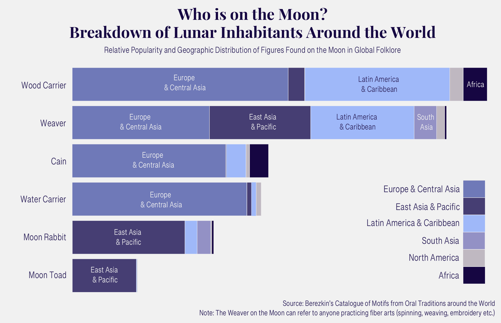

Sita Pawar · April 2025
Global Trends in Lunar Folklore
"There liveth none under the sunne, that knows what to make of the man in the moone."
- John Lyly, Prologue to Endymion
To disagree with John Lyly; it seems like everyone under the sun has something to make of the man in the Moon. Who is the Man in the Moon, you might wonder? Cultures across time and space have countless answers to that question. The Moon and its potential inhabitants are common subjects of myth and legend around the world. From Medieval Cain’s lonely prison to Greek Endymion’s distant lover, the moon occupies a variety of roles across global folklore. Despite the range of stories, data analysis reveals several common trends that persist across continents and millennia.
The Mythology and Folklore Database offers a centralized, digital compendium of data on Folklore and Oral Traditions largely based on the Berezkin’s Motif Catalogue. Yuri Berezkin, a Russian Anthropologist, compiled folklore and analyzed the stories to create a list of motifs (images, simple narratives, or tropes) that occur across different works and traditions. The catalogue contains information from over 150,000 different stories across 1,000+ global traditions, both oral and written. While the narratives are sourced from traditions across the world, there is a greater density of folklore from Central and Western Europe and East Asia, so geographic breakdowns should be considered with this skew in mind.
Cyrano de Bergerac, a Renaissance novelist, playwright, and duelist credited with the first description of rocket powered flight in his book A Voyage to the Moon, : "I think the Moon is a world like this one, and the Earth is its moon." This sentiment appears across many cultures and so it is no surprise for so many people to wonder about who might be living in “the world like this one.” However, the Moon is commonly seen as a lonely, isolated place. Tang Dynasty poet Li Shangyin contemplated the fate of the Chinese Moon goddess Chang’e in his poem "To The Moon Goddess" writing, “Ah, you Lady in the Moon! How you must have repented your theft of the Elixir of Life, for which you are condemned to live eternally, with your heart bleeding from night to night in the loneliness of the sea and the sky!” Similarly, the popular Medieval poem “The Man in the Moon” describes the isolated existence of the Moon’s inhabitant, Hubert: “For fear lest he fall, he shudders and meanders. When the frost freezes, he endures much chill. The thorns are sharp; they tear his clothes. There is nobody in the world who knows where he sits.”
An interesting exception to the global popularity of stories about Moon inhabitants is the Middle East and North Africa. Aside from Jewish folklore, Middle Eastern stories rarely feature a man in the Moon. While the Moon features heavily in Islamic and Middle Eastern poetry, there are few examples of a man or other inhabitant in the Moon. While there is evidence of pre-Islamic lunar deities, the Moon, specifically the crescent Moon, has heavy religious significance in Islam. This could be a factor in the lack of lunar inhabitants in Middle Eastern folklore.

The “Man in the Moon” Motif encompasses several different sub-archetypes that reveal geographic trends about the human Moon inhabitants. Many regions contain different narrative traditions about who specifically lived on the Moon. Since folklore traditions can be incredibly specific to subregions, an individual country is often associated with many contradicting stories about the Moon. Northern India alone has the Hindu Moon god Chandra, a story of a rabbit put into the Moon by Buddha, as well as folklore of an old woman spinning thread or weaving in the Moon. European folklore trends toward a man in the Moon figure however the specific identity and characteristics of the man vary significantly.
In addition to the overarching “Man in the Moon” motif, Berezkin identifies the most common archetypes for lunar residents as the Wood Carrier, the Weaver (or Moon Spinner), Cain (and sometimes Abel), the Water Carrier, the Moon Rabbit, and the Moon Toad. The Mythology and Folklore database provides a breakdown of the occurrences of each motif across the traditions, allowing easy investigation into the specific stories behind these figures. These motifs occur in both popular literature and lesser-known folklore. Both Dante’s Inferno and Paradiso reference the Medieval Christian tradition of Cain the Wanderer, exiled to the Moon and burdened with thorns. Medieval Europeans often associated him with the Man in the Moon and Wood Carrier in the Moon. However, Germanic folklore often tells of the Wood Carrier in the Moon as the story of a man sent to the Moon as punishment for collecting wood on the Sabbath. Other European sources and poems describe the Man in the Moon as a drunkard, usually depicted with a bottle in hand.
While this data and these geographic distributions make no claims about whether these motifs developed independently or were influenced by other cultures, they do suggest interesting areas to investigate in order to learn more about the correlation between cross-cultural folklore.
The man in the Moon stands and strides
on his forked stick he bears his burden
It’s a great wonder that he doesn’t fall
…
If your pledge is taken, bring home the brushwood!
Set forth your other foot! Stride over the path!
- “Man in the Moon” Medieval European Poem
"The ancient ones used to say that the Moon was cold and dark
inside, and that Nei Nibarara and Nei Matanoko were busily weaving mats in there!”
- History of Abemama, Atoll of Kiribati
“The most popular version tells of an orphan (or woman) exhausted from a hard life and work who, when carrying water from a spring or brook, asks the Moon to take her up to him. The Moon pities her and takes her up to the sky, where we can see her on moonlit nights.”
- Mare Koiva. Sky Observation and Mythology: The Moon in Baltic-Finnic, Baltic, and Slavic Tradition. (2019).
'Chang'e Soaring to the Moon Scroll', National Palace Museum, Ming Dynasty 1368 - 1644
Illustration from the Dictionnaire Infernal by Louis Le Breton, 6th edition, 1863
Mayan Moon Goddess Ix Chel and Rabbit, Princeston University Museum, 600–900 CE
Many folklore traditions deal not only with inhabitants of the Moon’s surface but also personifications of the Moon itself. Sometimes these are conflated with a lunar resident, but often deities associated with the Moon or Sun are seen as manifestations of that celestial body. Alternatively, the celestial body itself is given agency and referred to with masculine or feminine pronouns. The Mythology and Folklore database uses Berezkin’s motif catalogue to identify different instances of gendered celestial pairings across global narratives. Folklore traditions can contain multiple versions of gendered sun and moon pairings.
The Greek myth of Endymion, where a Shepard falls in love with Selene, the Moon, is popularly retold in Renaissance and Romantic literature. Chinese culture also has associations between femininity, the Moon, and yin energy, in contrast to yang, the sun, and masculinity. In both literature and colloquially women are often associated with the Moon; this journal article is emphatic about the feminine identity of the Moon. However, many traditions hold different gendered associations for these celestial figures. Both Hindu and Ancient Egyptian cultures have male gods for both the Sun and Moon, while German and Norse folklore have a female Sun goddess and male Moon. Similarly, Timothy Harley’s book Moon Lore is absolutely convinced that that Moon is a male deity.
Apollo and Diana (attacking Niobe)
by Pierre-Charles Jombert, 1772
Female Moon, Male Sun (Roman Myth)
“The Wolves Pursuing Sol and Mani”
by J.C. Dollman, 1909
Male Moon, Female Sun (Norse Myth)
Chandra in his Moon Chariot, by unknown, Rajasthan, 18th century
Male Moon, Male Sun (Hindu Myth)
Looking up and wondering about the Moon has been a shared experience for humans across centuries. The cultural significant of the Moon as a timeless constant throughout human evolution is reflected in media, religion, and stories. Modern digital access and data analysis allows us to study not only individual stories but also compare literature and reveal global trends on a larger scale than previously possible.
"What is there in thee, Moon! That thou shouldst move my heart so potently?”
- John Keats, Endymion
About
The Mythology and Folklore database allows anyone to make an account and view motifs and their geographic dispersal. For anyone interested in studies of Folklore, I recommend exploring the site and Berezkin’s motif catalogue.
I used a 2019 extract of the data for the first two visualizations and numbers from the site directly for the Moon gender visualization. The data was analyzed using R and visualized with ggplot and Adobe Illustrator.
Sita Pawar is a senior graduating Brown University in May 2025. She studies Computer Science and greatly enjoys Comparative Literature.
She is a big fan of data visualization, design, and the Moon. To learn more about the lunar literature that inspired this project, she recommends reading Ludovico Ariosto's Orlando Furioso or Edmond Rostand's Cyrano de Bergerac.
For more of her work check out her website sitaap.com
Sources
The Mythology and Folklore Database
Endymion by John Keats
Endymion, or the Man in the Moon by John Lyly
Kavaela translated by John Martin Crawford
Moon Lore by Timothy Harley
The Four Seasons of Tang Poetry by Ching-Hsiung Wu
The Man in the Moon by unknown
Voyages to the Moon and Sun by Cyrano de Bergerac
Scholarly Articles
Carthy, Ita Mac. “Ariosto the Lunar Traveller.” The Modern Language Review, vol. 104, no. 1, 2009, pp. 71–82. JSTOR, http://www.jstor.org/stable/20468124. Accessed 20 Apr. 2025.
Dauge-Roth, Katherine. “Femmes Lunatiques: Women and the Moon in Early Modern France.” Dalhousie French Studies, vol. 71, 2005, pp. 3–29. JSTOR, http://www.jstor.org/stable/40837599. Accessed 19 Apr. 2025.
Mare Koiva. Sky Observation and Mythology: The Moon in Baltic-Finnic, Baltic, and Slavic Tradition. (2019).
Ratto, Kathleen. “The Moon in Literature.” Elementary English, vol. 48, no. 8, 1971, pp. 932–36. JSTOR, http://www.jstor.org/stable/41387006. Accessed 19 Apr. 2025.
Stelios Michalopoulos, Melanie Meng Xue, Folklore, The Quarterly Journal of Economics, Volume 136, Issue 4, November 2021, Pages 1993–2046, https://doi.org/10.1093/qje/qjab003
Teeko, Airam, et al. “A History of Abemama.” Tungaru Traditions: Writings on the Atoll Culture of the Gilbert Islands, edited by H. E. Maude, University of Hawai’i Press, 1989, pp. 334–54. JSTOR, https://doi.org/10.2307/jj.13568109.39. Accessed 20 Apr. 2025.